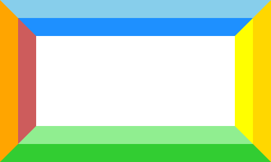
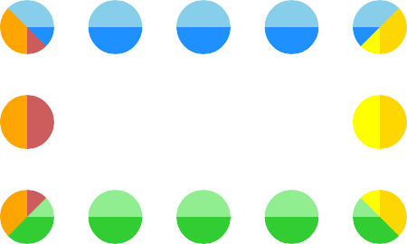

1. Introduction
This specification extends the parts related to borders and box decorations of CSS Backgrounds and Borders Module Level 3 [CSS3BG]. It is currently a diff specification; see [CSS3BG] for the rest of the features related to borders and box decorations.
It provides specifications for the added corner-*-shape and border-shape properties, as well as logical shorthands for border-*-radius, box-shadow-* longhands, and partial borders via the border-limit and border-*-clip properties.
Merge the Level 3 text into this draft.
2. Borders
The border can either be a predefined style (solid line, double line, dotted line, pseudo-3D border, etc.) or it can be an image. In the former case, various properties define the style (border-style), color (border-color), and thickness (border-width) of the border.
2.1. Line Colors: the border-color properties
| Name: | border-top-color, border-right-color, border-bottom-color, border-left-color, border-block-start-color, border-block-end-color, border-inline-start-color, border-inline-end-color |
|---|---|
| Value: | <color> | <image-1D> |
| Initial: | currentcolor |
| Applies to: | all elements except ruby base containers and ruby annotation containers |
| Inherited: | no |
| Percentages: | N/A |
| Computed value: | the computed color and/or a one-dimensional image function |
| Canonical order: | per grammar |
| Animation type: | see prose |
| Logical property group: | border-color |
| Name: | border-color |
|---|---|
| Value: | [ <color> | <image-1D> ]{1,4} |
| Initial: | see individual properties |
| Applies to: | see individual properties |
| Inherited: | see individual properties |
| Percentages: | see individual properties |
| Computed value: | see individual properties |
| Animation type: | see individual properties |
| Canonical order: | per grammar |
These properties set the foreground color of the border specified by the border-style properties.
The stripes defined by <image-1D> follow the shape of the border on the side to which they apply, and are drawn in bands starting from the padding edge and progressing outwards. The border width at each point defines the total width of the stripes at that point.
.foo{ border : 30 px solid; border-color : stripes ( dodgerblue, skyblue) stripes ( yellow, gold) stripes ( lightgreen, limegreen) stripes ( indianred, orange); }
Sample rendering:

The same border colors with border-style: dotted:

border-color is a shorthand for the four border-*-color properties. The four values set the top, right, bottom and left border, respectively. A missing left is the same as right, a missing bottom is the same as top, and a missing right is also the same as top. This is resolved individually for each list item.
The flow-relative properties border-block-start-color, border-block-end-color, border-inline-start-color, and border-inline-end-color correspond to the physical properties border-top-color, border-bottom-color, border-left-color, and border-right-color. The mapping depends on the element’s writing-mode, direction, and text-orientation.
| Name: | border-block-color, border-inline-color |
|---|---|
| Value: | <'border-top-color'>{1,2} |
| Initial: | see individual properties |
| Applies to: | see individual properties |
| Inherited: | see individual properties |
| Percentages: | see individual properties |
| Computed value: | see individual properties |
| Animation type: | see individual properties |
| Canonical order: | per grammar |
These two shorthand properties set the border-block-start-color & border-block-end-color and border-inline-start-color & border-inline-end-color, respectively. The first value represents the start side color, and the second value represents the end side color. If only one value is given, it applies to both the start and end sides.
2.2. Line Patterns: the border-style properties
| Name: | border-top-style, border-right-style, border-bottom-style, border-left-style, border-block-start-style, border-block-end-style, border-inline-start-style, border-inline-end-style |
|---|---|
| Value: | <line-style> |
| Initial: | none |
| Applies to: | all elements except ruby base containers and ruby annotation containers |
| Inherited: | no |
| Percentages: | N/A |
| Computed value: | specified keyword |
| Canonical order: | per grammar |
| Animation type: | discrete |
| Logical property group: | border-style |
The flow-relative properties border-block-start-style, border-block-end-style, border-inline-start-style, and border-inline-end-style correspond to the physical properties border-top-style, border-bottom-style, border-left-style, and border-right-style. The mapping depends on the element’s writing-mode, direction, and text-orientation.
| Name: | border-block-style, border-inline-style |
|---|---|
| Value: | <'border-top-style'>{1,2} |
| Initial: | see individual properties |
| Applies to: | see individual properties |
| Inherited: | see individual properties |
| Percentages: | see individual properties |
| Computed value: | see individual properties |
| Animation type: | see individual properties |
| Canonical order: | per grammar |
These two shorthand properties set the border-block-start-style & border-block-end-style and border-inline-start-style & border-inline-end-style, respectively. The first value represents the start side style, and the second value represents the end side style. If only one value is given, it applies to both the start and end sides.
2.3. Line Thickness: the border-width properties
| Name: | border-top-width, border-right-width, border-bottom-width, border-left-width, border-block-start-width, border-block-end-width, border-inline-start-width, border-inline-end-width |
|---|---|
| Value: | <line-width> |
| Initial: | medium |
| Applies to: | all elements except ruby base containers and ruby annotation containers |
| Inherited: | no |
| Percentages: | N/A |
| Computed value: | absolute length, snapped as a border width; zero if the border style is none or |
| Canonical order: | per grammar |
| Animation type: | by computed value |
| Logical property group: | border-width |
The flow-relative properties border-block-start-width, border-block-end-width, border-inline-start-width, and border-inline-end-width correspond to the physical properties border-top-width, border-bottom-width, border-left-width, and border-right-width. The mapping depends on the element’s writing-mode, direction, and text-orientation.
| Name: | border-block-width, border-inline-width |
|---|---|
| Value: | <'border-top-width'>{1,2} |
| Initial: | see individual properties |
| Applies to: | see individual properties |
| Inherited: | see individual properties |
| Percentages: | see individual properties |
| Computed value: | see individual properties |
| Animation type: | see individual properties |
| Canonical order: | per grammar |
These two shorthand properties set the border-block-start-width & border-block-end-width and border-inline-start-width & border-inline-end-width, respectively. The first value represents the start side width, and the second value represents the end side width. If only one value is given, it applies to both the start and end sides.
2.4. Border Shorthand Properties
| Name: | border-top, border-right, border-bottom, border-left, border-block-start, border-block-end, border-inline-start, border-inline-end |
|---|---|
| Value: | <line-width> || <line-style> || <color> |
| Initial: | See individual properties |
| Applies to: | all elements except ruby base containers and ruby annotation containers |
| Inherited: | no |
| Percentages: | N/A |
| Computed value: | see individual properties |
| Animation type: | see individual properties |
| Canonical order: | per grammar |
The flow-relative properties border-block-start, border-block-end, border-inline-start, and border-inline-end correspond to the physical properties border-top, border-bottom, border-left, and border-right. The mapping depends on the element’s writing-mode, direction, and text-orientation.
| Name: | border-block, border-inline |
|---|---|
| Value: | <'border-block-start'> |
| Initial: | see individual properties |
| Applies to: | see individual properties |
| Inherited: | see individual properties |
| Percentages: | see individual properties |
| Computed value: | see individual properties |
| Animation type: | see individual properties |
| Canonical order: | per grammar |
These two shorthand properties set the border-block-start & border-block-end or border-inline-start & border-inline-end, respectively, both to the same style.
3. Corners
3.1. Corner Sizing: the border-*-*-radius properties
| Name: | border-top-left-radius, border-top-right-radius, border-bottom-right-radius, border-bottom-left-radius, border-start-start-radius, border-start-end-radius, border-end-start-radius, border-end-end-radius |
|---|---|
| Value: | <length-percentage [0,∞]>{1,2} |
| Initial: | 0 |
| Applies to: | all elements (but see prose) |
| Inherited: | no |
| Percentages: | Refer to corresponding dimension of the border box. |
| Computed value: | pair of computed <length-percentage> values |
| Canonical order: | per grammar |
| Animation type: | by computed value |
| Logical property group: | border-radius |
The flow-relative properties border-start-start-radius, border-start-end-radius, border-end-start-radius, and border-end-end-radius correspond to the physical properties border-top-left-radius, border-bottom-left-radius, border-top-right-radius, and border-bottom-right-radius. The mapping depends on the element’s writing-mode, direction, and text-orientation, with the first start/end giving the block axis side, and the second the inline-axis side (i.e. patterned as 'border-block-inline-radius').
3.2. Corner Sizing Shorthands: the border-radius and border-*-radius shorthand properties
3.2.1. Sizing The Corners Of One Side: The border-top-radius, border-right-radius, border-bottom-radius, border-left-radius, border-block-start-radius, border-block-end-radius, border-inline-start-radius, border-inline-end-radius shorthands
| Name: | border-top-radius, border-right-radius, border-bottom-radius, border-left-radius, border-block-start-radius, border-block-end-radius, border-inline-start-radius, border-inline-end-radius |
|---|---|
| Value: | <length-percentage [0,∞]>{1,2} [ / <length-percentage [0,∞]>{1,2} ]? |
| Initial: | 0 |
| Applies to: | all elements (but see prose) |
| Inherited: | no |
| Percentages: | Refer to corresponding dimension of the border box. |
| Computed value: | see individual properties |
| Canonical order: | per grammar |
| Animation type: | see individual properties |
The border-*-radius shorthands set the two border-*-*-radius longhand properties of the related side. If values are given before and after the slash, then the values before the slash set the horizontal radius and the values after the slash set the vertical radius. If there is no slash, then the values set both radii equally. The two values for the radii are given in the order top-left, top-right for border-top-radius, top-right, bottom-right for border-right-radius, bottom-left, bottom-right for border-bottom-radius, top-left, bottom-left for border-left-radius, start-start, start-end for border-block-start-radius, end-start, end-end for border-block-end-radius start-start, end-start for border-inline-start-radius, and start-end, end-end for border-inline-end-radius. If the second value is omitted it is copied from the first.
3.2.2. Sizing All Corners At Once: The border-radius shorthand
| Name: | border-radius |
|---|---|
| Value: | <length-percentage [0,∞]>{1,4} [ / <length-percentage [0,∞]>{1,4} ]? |
| Initial: | 0 |
| Applies to: | all elements, except table element when border-collapse is collapse |
| Inherited: | no |
| Percentages: | n/a |
| Computed value: | as specified |
| Canonical order: | per grammar |
| Animation type: | see individual properties |
See [CSS3BG].
3.3. Corner Shaping: the corner-*-shape properties
By default, non-zero border-radius values define a quarter-ellipse corner shape that rounds the affected corners, filling the corner area defined by the border-radius for that corner. However in some cases, other corner shapes are desired. The corner-*-shape properties (and their shorthands) specify exactly what corner shapes a box will use for the region defined by its border-*-radius values.
The different corner shapes can all be expressed as different parameters to a superellipse. A superellipse is a generalization of an ellipse, and based on its `k` parameter can express all the shapes between a square, an ellipse, and a notch.
How does a superellipse work?
A unit circle is defined by the equation:
The circle is made from all points (x,y) that satisfy the equation. A given ellipse can then be produced by scaling this shape in the X and/or Y axis.
The unit superellipse equation just changes the 2 exponent into a variable. For this spec’s purposes, we’ll write it as 2K:
The K in this equation is the superellipse() argument.
K can be any value; setting K to 1 gives the standard circle/ellipse equation, but other values define the entire family of superellipse curves:
-
Values larger than 1 make it more "square": the traditional "squircle" uses a K of 2, and a K of infinity is a perfect square. (A K of only 10 is already nearly indistinguishable from a square; it scales very quickly.)
-
Values between 0 and 1 make it "flatter"; when K is 0 it’s a diamond with perfectly flat sides.
-
Negative values define concave curves, roughly opposite of what you get with positive values: a K of -1 gives a nearly elliptical "scoop" that’s roughly the opposite of a K of 1, a K of -2 gives a "squircle" scoop, a K of negative infinity gives a square scoop, etc.
(Note that most literature on superellipses will write the equation with a simpler exponent. The form was chosen here to make the argument ranges easier to reason about: all possible values are valid, the symmetrical shapes are just positive/negative, the "middle" bevel is 0, etc.)
To allow full expression as well as interpolation, the corner-shape properties can provide the superellipse parameter directly using the superellipse() function, or use one of the supplied keywords which represent commonly used parameters. See the <corner-shape-value> definition for details.
| Name: | corner-top-left-shape, corner-top-right-shape, corner-bottom-right-shape, corner-bottom-left-shape, corner-start-start-shape, corner-start-end-shape, corner-end-start-shape, corner-end-end-shape |
|---|---|
| Value: | <corner-shape-value> |
| Initial: | round |
| Applies to: | all elements where border-radius can apply |
| Inherited: | no |
| Percentages: | n/a |
| Computed value: | the corresponding superellipse() value |
| Canonical order: | per grammar |
| Animation type: | see superellipse interpolation |
| Logical property group: | corner-shape |
The corner-*-*-shape longhand properties set the corner shape for the given corner.
The flow-relative longhands (corner-start-start-shape, etc) correspond to the physical longhands (corner-top-left-shape, etc) depending on the element’s writing-mode, direction, and text-orientation. The first start/end gives the block axis side, and the second the inline-axis side (i.e. patterned as corner-block-inline-shape).
<corner-shape-value> = round | scoop | bevel | notch | square | squircle |
<superellipse()>
superellipse() = superellipse(<number [-∞,∞]> | infinity | -infinity)
- round
-
The corner shape is a quarter of a convex ellipse.
Equivalent to superellipse(1).
Note: This is the initial value of corner-shape properties, as it was the behavior of border-radius before corner-shape existed.
- squircle
- The corner shape is a quarter of a "squircle", a convex curve between round and square. Equivalent to superellipse(2).
- square
-
The corner shape is a convex 90deg angle.
Equivalent to superellipse(infinity).
Note: This looks identical to the "normal" square corner you get from border-radius: 0, but it can smoothly animate with the other corner-shape values.
- bevel
- The corner shape is a straight diagonal line, neither convex nor concave. Equivalent to superellipse(0).
- scoop
- The corner shape is a concave quarter-ellipse. Equivalent to superellipse(-1).
- notch
- The corner shape is a concave 90deg angle. Equivalent to superellipse(-infinity).
- superellipse(K)
-
The corner shape is a quarter of a superellipse.
The argument K is the superellipse parameter,
and it defines a superellipse
using an exponent of 2K.
See the note in § 3.3 Corner Shaping: the corner-*-shape properties for an explanation of the mathematical definition of a superellipse, and what various K values mean. See § 3.5.4 Rendering corner-shape for precise details of how the superellipse is computed and rendered.
Note: If border-radius is not specified (or is set to 0), the corner area is zero-sized as well, and corner-shape won’t have any effect.
corner-*-shape does not alter the overflow rules for border-*-radius, except insofar as it shapes the corners differently; elements are still clipped by the shaped border as normal.
The curve specified by corner-*-shape defines the outer edge of the border. The inner edge of the border follows the curve of the outer edge (in a way that’s not necessarily expressible as a superellipse curve), with a nearly consistent distance from the outer edge throughout, (or a linearly increasing distance if the border-width of the two border edges meeting at the the corner are not uniform).
corner-*-shape also affects the rendering of box-shadow, and how the overflow clip edge is shaped when it’s extended from the box, but these do not directly follow the corner-*-shape path like the inner border edge does. Instead, it scales the corner-shape path in an axis-aligned manner.
3.4. Corner Shaping Shorthands: the corner-shape and corner-*-shape shorthand properties
3.4.1. Shaping The Corners Of One Side: The corner-*-shape shorthands:
| Name: | corner-top-shape, corner-right-shape, corner-bottom-shape, corner-left-shape, corner-block-start-shape, corner-block-end-shape, corner-inline-start-shape, corner-inline-end-shape |
|---|---|
| Value: | <'corner-top-left-shape'>{1,2} |
| Initial: | see individual properties |
| Applies to: | see individual properties |
| Inherited: | see individual properties |
| Percentages: | see individual properties |
| Computed value: | see individual properties |
| Animation type: | see individual properties |
| Canonical order: | per grammar |
The corner-*-shape/etc shorthands set the two corner-*-*-shape properties of the related side. If only one value is given, the second value defaults to the same value.
For the physical shorthands (corner-top-shape, etc), the values are either in left/right order, or top/bottom order, whichever axis is meaningful for the property. That is, corner-top-shape: round square sets corner-top-left-shape: round; corner-top-right-shape: square;.
For the logical shorthands (corner-block-start-shape, etc), the values are always in start/end order in the other axis. That is, corner-block-start-shape: round square sets corner-start-start-shape: round; corner-start-end-shape: square;.
3.4.2. Shaping All Corners At Once: The corner-shape shorthand
| Name: | corner-shape |
|---|---|
| Value: | <'corner-top-left-shape'>{1,4} |
| Initial: | round |
| Applies to: | all elements where border-radius can apply |
| Inherited: | no |
| Percentages: | see individual properties |
| Computed value: | see individual properties |
| Animation type: | see individual properties |
| Canonical order: | per grammar |
The corner-shape property specifies the shape of the box’s corners, within the region specified by border-radius. The four values set the top, right, bottom and left shape, respectively. A missing left is the same as right, a missing bottom is the same as top, and a missing right is also the same as top.
3.5. Corner Sizing & Shaping Shorthands: the corner and corner-* shorthand properties
3.5.1. Sizing & shaping a corner: The corner-top-left, corner-top-right, corner-bottom-right, corner-bottom-left, corner-start-start, corner-start-end, corner-end-start, corner-end-end shorthands
| Name: | corner-top-left, corner-top-right, corner-bottom-left, corner-bottom-right, corner-start-start, corner-start-end, corner-end-start, corner-end-end |
|---|---|
| Value: | <'border-top-left-radius'>{1,2} || <'corner-top-left-shape'> |
| Initial: | 0 |
| Applies to: | all elements (but see prose) |
| Inherited: | no |
| Percentages: | Refer to corresponding dimension of the border box. |
| Computed value: | see individual properties |
| Canonical order: | per grammar |
| Animation type: | see individual properties |
The corner-*-* shorthands set the two corner-*-*-shape and border-*-*-radius longhand properties of the related side. See the corresponding corner-*-*-shape and border-*-*-radius properties for further details.
3.5.2. Sizing & shaping rhe Corners Of One Side: The corner-top, corner-right, corner-bottom, corner-left, corner-block-start, corner-block-end, corner-inline-start, corner-inline-end shorthands
| Name: | corner-top, corner-right, corner-bottom, corner-left, corner-block-start, corner-block-end, corner-inline-start, corner-inline-end |
|---|---|
| Value: | <'border-top-radius'> || <'corner-top-shape'> |
| Initial: | 0 |
| Applies to: | all elements (but see prose) |
| Inherited: | no |
| Percentages: | Refer to corresponding dimension of the border box. |
| Computed value: | see individual properties |
| Canonical order: | per grammar |
| Animation type: | see individual properties |
The corner-* shorthands set the two corner-*-shape longhand properties and two border-*-radius longhand properties of the related side. See the corresponding corner-*-shape and border-*-radius properties for further details.
3.5.3. Sizing & Shaping All Corners At Once: The corner shorthand
| Name: | corner |
|---|---|
| Value: | <'border-radius'> || <'corner-shape'> |
| Initial: | 0 |
| Applies to: | all elements (but see prose) |
| Inherited: | no |
| Percentages: | Refer to corresponding dimension of the border box. |
| Computed value: | see individual properties |
| Canonical order: | per grammar |
| Animation type: | see individual properties |
The corner shorthand sets the corner-*-shape and border-*-radius longhands all together.
3.5.4. Rendering corner-shape
When rendering elements with shaped corners, the element’s path needs to be offset, based on border, outline, box-shadow, overflow-clip-margin and more.
When rendering borders or outlines, the offset is aligned to the curve of the element’s shape, while when rendering box-shadow or offsetting for overflow-clip-margin, the offset is aligned to the axis.
An element element’s outer contour is the border contour path given element and element’s border edge.
An element element’s inner contour is the border contour path given element and element’s padding edge.
An element’s border is rendered in the area between its outer contour and its inner contour.
An element’s outline follows the outer contour with the used outline-width and outline-offset. The precise way in which it is rendered is implementation-defined.
An element’s overflow area is shaped by its inner contour. An element’s overflow clip edge is shaped by the border contour path given element, and element’s padding edge, and element’s used overflow-clip-margin.
Each shadow of element’s 'box shadow' is shaped by the border contour path given element, and element’s border edge, and the shadow’s used box-shadow-spread.
-
Let outerLeft, outerTop, outerRight, outerBottom be element’s unshaped border edge.
-
Let topLeftHorizontalRadius, topLeftVericalRadius, topRightHorizontalRadius, topRightVerticalRadius, bottomRightHorizontalRadius, bottomRightVerticalRadius, bottomLeftHorizontalRadius, and bottomLeftVerticalRadius be element border edge’s radii, scaled by element’s opposite corner scale factor.
-
Let topLeftShape, topRightShape, bottomRightShape, and bottomLeftShape be element’s computed corner-*-shape values.
-
Let targetLeft, targetTop, targetRight, targetBottom unshaped targetEdge.
-
Let path be a new path [SVG2].
-
Add corner to path given path, the rectangle
(outerRight - topRightHorizontalRadius, outerTop, topRightHorizontalRadius, topRightVerticalRadius), targetEdge, 0, targetTop - outerTop, outerRight - targetRight, and topRightShape. -
Add corner to path given path, the rectangle
(outerRight - bottomRightHorizontalRadius, outerBottom - bottomRightVerticalRadius, bottomRightHorizontalRadius, bottomRightVerticalRadius), targetEdge, 1, outerRight - targetRight, outerBottom - targetBottom, and bottomRightShape. -
Add corner to path given path, the rectangle
(outerLeft, outerBottom - bottomLeftVerticalRadius, bottomLeftHorizontalRadius, bottomLeftVerticalRadius), targetEdge, 2, outerBottom - targetBottom, targetLeft - outerLeft, and bottomLeftShape. -
Add corner to path given path, the rectangle
(outerLeft, outerTop, topLeftHorizontalRadius, topLeftVericalRadius), targetEdge, 3, targetLeft - outerLeft, targetTop - outerTop, and topLeftShape. -
If spread is not 0, then:
-
Scale path by
1 + (spread * 2) / (targetEdge’s width), 1 + (spread * 2) / (targetEdge’s height). -
Translate path by
-spread, -spread.
Note: this creates an effect where the resulting path has the same shape as the original path, but scaled to fit the given spread.
-
-
Return path.
To add corner to path given a path path, a rectangle cornerRect, a rectangle trimRect, and numbers orientation, startThickness, endThickness, curvature:
-
If cornerRect is empty, or if curvature is ∞:
-
Let innerQuad be trimRect’s clockwise quad .
-
Extend path by drawing a line to innerQuad[
(orienation + 1) % 4]. -
Return.
-
-
Let cornerQuad be cornerRect’s clockwise quad.
-
If curvature is -∞:
-
Extend path by drawing a line from cornerQuad[0] to cornerQuad[3], trimmed by trimRect.
-
Extend path by drawing a line from cornerQuad[3] to cornerQuad[2], trimmed by trimRect.
-
Return.
-
-
Let clampedNormalizedHalfCorner be the normalized superellipse half corner given
clamp(curvature, -1, 1). -
Let equivalentQuadraticControlPointX be
clampedNormalizedHalfCorner * 2 - 0.5. -
Let curveStartPoint be the aligned corner point given cornerQuad[orienation], the vector (equivalentQuadraticControlPointX,
1 - equivalentQuadraticControlPointX), startThickness, and orientation + 1. -
Let curveEndPoint by the aligned corner point given cornerQuad[(orientation + 2) % 4], the vector (
equivalentQuadraticControlPointX - 1,-equivalentQuadraticControlPointX), endThickness, and orientation + 3. -
Let alignedCornerRect be a rectangle that includes the points curveStartPoint and curveEndPoint.
-
Let projectionToCornerRect be a transformation matrix, translated by
(alignedCornerRect’s x coordinate, alignedCornerRect’s y coordinate), scaled by(alignedCornerRect’s width dimension, alignedCornerRect’s height dimension), translated by(0.5, 0.5), rotated by90deg * orientation, and translated by(-0.5, -0.5). -
Let K be
0.5abs(curvature). -
For each T between 0 and 1:
-
Let A be
TK. -
Let B be
1 - (1 - T)K. -
Let normalizedPoint be
(A, B)if curvature is positive, otherwise(B, A). -
Let absolutePoint be normalizedPoint, transformed by projectionToCornerRect.
-
If absolutePoint is within trimRect, extend path through absolutePoint.
Note: User agents may approximate this algorithm, for instance, by using concatenated Bezier curves, to balance between performance and rendering accuracy.
-
To compute the aligned corner point given a point originalPoint, a two-component vector offsetFromControlPoint, a number thickness, and a number orientation:
-
Let length be
hypot(offsetFromControlPoint.x, offsetFromControlPoint.y). -
Rotate offsetFromControlPoint by
90deg * orientation, and scale by thickness. -
Translate originalPoint by
offsetFromControlPoint.x / length, offsetFromControlPoint.y / length, and return the result.
The clockwise quad given a rectangle rect, is a quadrilateral with the points (rect’s x coordinate, rect’s y coordinate), (rect’s x coordinate + rect’s width dimension, rect’s y coordinate), (rect’s x coordinate + rect’s width dimension, rect’s y coordinate + rect’s height dimension), (rect’s x coordinate, rect’s y coordinate + rect’s height dimension).
3.5.5. Constraining opposite radii
When concave corner-shape values are present (the superellipse parameter is negative), diagonally opposite corners might overlap each other.
The following example would create overlapping corners if not constrained.
div{ corner-shape : scoop; border-top-left-radius : 80 % ; border-bottom-right-radius : 80 % ; }
To prevent this, the four radii are constrained to prevent overlaps. This is done by computing a hull polygon for each of the opposite corners, and finding the highest downscale factor which, if applied to both corners, would make it so that the polygons would not intersect.
-
Let rect be element’s border box.
-
Let topRightHull be a the normalized inner corner hull given element’s computed corner-top-right-shape, mapped to the rectangle (rect’s width dimension - element’s computed horizontal border-top-right-radius, 0, rect’s computed border-top-right-radius).
-
Let bottomRightHull be a the normalized inner corner hull given element’s computed corner-bottom-right-shape, rotated by 90deg with (0.5, 0.5) as an origin, and mapped to the rectangle (rect’s width dimension - element’s computed horizontal border-bottom-right-radius, rect’s height dimension - element’s computed vertical border-bottom-right-radius, element’s computed border-bottom-right-radius).
-
Let bottomLeftHull be a the normalized inner corner hull given element’s computed corner-bottom-right-shape, rotated by 180deg with (0.5, 0.5) as an origin, and mapped to the rectangle (0, rect’s height dimension - element’s computed vertical border-bottom-left-radius, element’s computed border-bottom-left-radius).
-
Let topLeftHull be a the normalized inner corner hull given element’s computed corner-top-left-shape, rotated by 270deg with (0.5, 0.5) as an origin, mapped to (0, 0, element’s computed border-top-left-radius).
-
Let scaleFactorA be the highest number which, if both topLeftHull and bottomRightHull were scaled by, using their first point as the origin, those polygons would not intersect.
-
Let scaleFactorB be the highest number which, if both topRightHull and bottomLeftHull were scaled by, using their first point as the origin, those polygons would not intersect.
-
Return
min(1, scaleFactorA, scaleFactorB).
3.5.6. Interpolating corner shapes
Since a <corner-shape-value> can always be expressed by a superellipse() with an superellipse parameter variable, interpolating between two
<corner-shape-value>s is done by interpolating the superellipse parameter itself.
Since it uses a log2, interpolating it linearly would result in an effect where concave corners interpolate at a much higher velocity than convex corners.
To balance that, the superellipse interpolation formula describes how a superellipse parameter is converted to a value between 0 and 1, and vice versa:
- -∞
-
Return 0.
- ∞
-
Return 1.
- Otherwise
-
-
Let k be
0.5abs(s). -
Let convexHalfCorner be
0.5k. -
If s is less than 0, return
1 - convexHalfCorner. -
Return convexHalfCorner.
-
-
If curvature is greater than or equal to zero, return a triangle betwen « (1, 1), (1, 0), (0, 1) ».
-
Let axisLineA be a line between
(1, 0)and(1, 1). -
Let axisLineB be a line between
(0, 1)and(1, 1). -
Let normalizedHalfCorner be the normalized superellipse half corner given curvature.
-
Let halfCornerPoint be
(normalizedHalfCorner, 1 - normalizedHalfCorner). -
Let lineFromCenterToHalfCorner be a line between
(0, 0)and halfCornerPoint. -
Let tangentLine be the line perpendicular to lineFromCenterToHalfCorner, at halfCornerPoint.
-
Let intersectionA be the intersection between axisLineA and tangentLine.
-
Let intersectionB be the intersection between axisLineB and tangentLine.
-
Return a pentagon between the points « (1, 1), (1, 0), intersectionA, intersectionB, (0, 1), (1, 1) ».
To interpolate a superellipse parameter s to an interpolation value between 0 and 1, return the normalized superellipse half corner given s.
- 0
-
Return -∞.
- 0.5
-
Return 0.
- 1
-
Return ∞.
- Otherwise
-
-
Let convexHalfCorner be interpolationValue.
-
If interpolationValue is less than 0.5, set convexHalfCorner to 1 - interpolationValue.
-
Let k be
ln(0.5) / ln(convexHalfCorner). -
Let s be
log2(k). -
If interpolationValue is less than 0.5, return -s.
-
Return s.
-
4. Partial borders
Not Ready For Implementation
This section is not yet ready for implementation. It exists in this repository to record the ideas and promote discussion.
Before attempting to implement anything of this section, please contact the CSSWG at www-style@w3.org.
CSS borders traditionally cover an entire border edge. Sometimes, however, it can be useful to hide some parts of the border.
Here are two proposals for doing this: the second one is from GCPM, the first one is an attempt to recast it more readably. The names are terrible, known problem, proposals accepted. There is a problem with conceiving this as clipping: if you have dotted borders, you want whole dots always, not parts of dots. So it should be a drawing limit, not a clip.
4.1. Partial Borders: the border-limit property
| Name: | border-limit |
|---|---|
| Value: | all | [ sides | corners ] <length-percentage [0,∞]>? | [ top | right | bottom | left ] <length-percentage [0,∞]> |
| Initial: | all |
| Applies to: | all elements, except table element when border-collapse is collapse |
| Inherited: | no |
| Percentages: | relative to border-box |
| Computed value: | as specified |
| Canonical order: | per grammar |
| Animation type: | discrete |
By default, the entire border is drawn. However, border rendering can be limited to only part of a border. The keyword specifies which part, and the length or percentage specifies how much.
- all
- The entire border is drawn.
- sides
- The sides are drawn up to but not including the corners (as defined by the border radii). A length or percentage is measured from the center of each side: 50% draws the middle 50% of the border; by default the entire side is drawn.
- corners
- The corners are drawn plus the specified distance into the sides if specified. A length is measured from the closest edge of the corner area. A percentage is measured from the absolute corner of the border box.
- left
- right
- For the left and right (vertical) sides, draws the entire side and corner. For the top and bottom (horizontal) sides, draws the left/right portion, as specified. Distances are measured as for corners.
- top
- bottom
- For the top and bottom (horizontal) sides, draws the entire side and corner. For the left and right (vertical) sides, draws the top/bottom portion, as specified. Distances are measured as for corners.
The following example draws only the middle 50% of the sides.
div{ border : solid; border-limit : sides50 % ; }
The following example draws only the curved parts of the corners.
div{ border : solid; border-radius : 1 em 2 em ; border-limit : corners; }
The following example draws only the left 4em of the top border.
div{ border-top : solid; border-limit : left4 em ; }
The following example draws only the first 10px of each corner:
div{ border : solid; border-limit : corners10 px ; }
The following example draws the curved part of the corner plus 5px along the sides:
div{ border : solid; border-radius : 5 px ; border-limit : corners5 px ; }
The following example draws the curved part of the corner and all of the side except the middle 40%.
div{ border : solid; border-radius : 5 px ; border-limit : corners30 % ; }
4.2. The border-clip properties
| Name: | border-clip, border-clip-top, border-clip-right, border-clip-bottom, border-clip-left |
|---|---|
| Value: | normal | [ <length-percentage [0,∞]> | <flex> ]+ |
| Initial: | normal |
| Applies to: | all elements |
| Inherited: | no |
| Percentages: | refer to length of border-edge side |
| Computed value: | normal, or a list consisting of absolute lengths, or percentages as specified |
| Canonical order: | per grammar |
| Animation type: | by computed value |
These properties split their respective borders into parts along the border edge. The first part is visible, the second is invisible, the third part is visible, etc. Parts can be specified with lengths, percentages, or flexible lengths (expressed by the fr unit, as per [CSS3GRID]). The normal value means that the border is not split, but shown normally.
border-clip is a shorthand property for the four individual properties.
If the listed parts are shorter than the border, any remaining border is split proportionally between the specified flexible lengths. If there are no flexible lengths, the behavior is as if 1fr had been specified at the end of the list.
If the listed parts are longer than the border, the specified parts will be shown in full until the end of the border. In this case, all flexible lengths will be zero.
For horizontal borders, parts are listed from left to right. For vertical borders, parts are listed from top to bottom.
The exact border parts are determined by laying out the specified border parts with all flexible lengths initially set to zero. Any remaining border is split proportionally between the flexible lengths specified.
border-clip-top: 10px 1fr 10px; border-clip-bottom: 10px 1fr 10px; border-clip-right: 5px 1fr 5px; border-clip-left: 5px 1fr 5px;
By making the first part have zero length, the inverse border of the previous example can easily be created:
border-clip-top: 0 10px 1fr 10px; border-clip-bottom: 0 10px 1fr 10px; border-clip-right: 0 5px 1fr 5px; border-clip-left: 0 5px 1fr 5px;
border: thin solid black; border-clip: 0 1fr; /* hide borders */ border-clip-top: 10px 1fr 10px; /* make certain borders visible */ border-clip-bottom: 10px 1fr 10px;
border-top: thin solid black; border-bottom: thin solid black; border-clip-top: 10px; border-clip-bottom: 10px;
This rendering:
A sentence consists of words¹.
¹ Most often.
@footnote {
border-top: thin solid black;
border-clip: 4em;
}
border: 4px solid black; border-clip-top: 40px 20px 0 1fr 20px 20px 0 1fr 40px;
In this example, there will be a visible 40px border part on each end of the top border. Inside the 40px border parts, there will be an invisible border part of at least 20px. Inside these invisible border parts, there will be visible border parts, each 20px long with 20px invisible border parts between them.
The fragments are shown in red for illustrative purposes; they should not be visible in compliant UAs.
border: 4px solid black; border-clip-top: 3fr 10px 2fr 10px 1fr 10px 10px 10px 1fr 10px 2fr 10px 3fr;
All but one of the visible border parts are represented as flexible lengths in this example. The length of these border parts will change when the width of the element changes. Here is one rendering where 1fr ends up being 10px:
Here is another rendering where 1fr ends up being 30px:
The fragments are shown in red for illustrative purposes; they should be black in compliant UAs.
5. Drop Shadows
5.1. Coloring shadows: the box-shadow-color property
| Name: | box-shadow-color |
|---|---|
| Value: | <color># |
| Initial: | currentcolor |
| Applies to: | all elements |
| Inherited: | no |
| Percentages: | N/A |
| Computed value: | list, each item a computed color |
| Canonical order: | per grammar |
| Animation type: | by computed value |
The box-shadow-color property defines one or more drop shadow colors. The property accepts a comma-separated list of shadow colors.
See the section “Layering, Layout, and Other Details” for how box-shadow-color interacts with other comma-separated drop shadow properties to form each drop shadow layer.
5.2. Offsetting shadows: the box-shadow-offset property
| Name: | box-shadow-offset |
|---|---|
| Value: | [ none | <length>{2} ]# |
| Initial: | none |
| Applies to: | all elements |
| Inherited: | no |
| Percentages: | N/A |
| Computed value: | list, each item either none or a pair of offsets (horizontal and vertical) from the element‘s box |
| Canonical order: | per grammar |
| Animation type: | by computed value, treating none as 0 0 when interpolated with non-none values. |
The box-shadow-offset property defines one or more drop shadow offsets. The property accepts a comma-separated list. Each item in that list can either be the none value, which indicates no shadow, or a pair of horizontal and vertical offsets, where both values are described as <length> values.
- none
- The shadow will not be rendered. The values of other box shadow properties corresponding to this shadow have no effect.
- 1st <length>
- Specifies the horizontal offset of the shadow. A positive value draws a shadow that is offset to the right of the box, a negative length to the left.
- 2nd <length>
- Specifies the vertical offset of the shadow. A positive value offsets the shadow down, a negative one up.
See the section “Layering, Layout, and Other Details” for how box-shadow-offset interacts with other comma-separated drop shadow properties to form each drop shadow layer.
5.3. Blurring shadows: the box-shadow-blur property
| Name: | box-shadow-blur |
|---|---|
| Value: | <length [0,∞]># |
| Initial: | 0 |
| Applies to: | all elements |
| Inherited: | no |
| Percentages: | N/A |
| Computed value: | list, each item a <length> |
| Canonical order: | per grammar |
| Animation type: | by computed value |
The box-shadow-blur property defines one or more blur radii for drop shadows. The property accepts a comma-separated list of <length> values.
Negative values are invalid. If the blur value is zero, the shadow’s edge is sharp. Otherwise, the larger the value, the more the shadow’s edge is blurred. See Shadow Blurring, below.
See the section “Layering, Layout, and Other Details” for how box-shadow-blur interacts with other comma-separated drop shadow properties to form each drop shadow layer.
5.4. Spreading shadows: the box-shadow-spread property
| Name: | box-shadow-spread |
|---|---|
| Value: | <length># |
| Initial: | 0 |
| Applies to: | all elements |
| Inherited: | no |
| Percentages: | N/A |
| Computed value: | list, each item a <length> |
| Canonical order: | per grammar |
| Animation type: | by computed value |
The box-shadow-spread property defines one or more spread distances for drop shadows. The property accepts a comma-separated list of <length> values.
Positive values cause the shadow to expand in all directions by the specified radius. Negative values cause the shadow to contract. See Shadow Shape, below.
Note that for inner shadows, expanding the shadow (creating more shadow area) means contracting the shadow’s perimeter shape.
See the section “Layering, Layout, and Other Details” for how box-shadow-spread interacts with other comma-separated drop shadow properties to form each drop shadow layer.
5.5. Spreading shadows: the box-shadow-position property
| Name: | box-shadow-position |
|---|---|
| Value: | [ outset | inset ]# |
| Initial: | outset |
| Applies to: | all elements |
| Inherited: | no |
| Percentages: | N/A |
| Computed value: | list, each item one of the keywords |
| Canonical order: | per grammar |
| Animation type: | by computed value |
The box-shadow-position property defines one or more drop shadow positions. The property accepts a comma-separated list of outset and inset keywords.
- outset
- Causes the drop shadow to be an outer box-shadow. That means, one that shadows the box onto the canvas, as if it were lifted above the canvas.
- inset
- Causes the drop shadow to be an inner box-shadow. That means, one that shadows the canvas onto the box, as if the box were cut out of the canvas and shifted behind it.
See the section “Layering, Layout, and Other Details” for how box-shadow-position interacts with other comma-separated drop shadow properties to form each drop shadow layer.
5.6. Drop Shadows Shorthand: the box-shadow property
| Name: | box-shadow |
|---|---|
| Value: | <spread-shadow># |
| Initial: | none |
| Applies to: | all elements |
| Inherited: | no |
| Percentages: | N/A |
| Computed value: | see individual properties |
| Canonical order: | per grammar |
| Animation type: | see individual properties |
The box-shadow property attaches one or more drop-shadows to the box. The property accepts a comma-separated list of shadows, ordered front to back.
Each shadow is given as a <spread-shadow>, outlining the box-shadow-offset, and optional values for the box-shadow-blur, box-shadow-spread, box-shadow-color, and box-shadow-position. Omitted lengths are 0; omitted colors default to transparent when the specified offset is none and to currentcolor otherwise.
<spread-shadow> = <'box-shadow-color'>? && [ <'box-shadow-offset'> [ <'box-shadow-blur'> <'box-shadow-spread'>? ]? ] && <'box-shadow-position'>?
5.7. Layering, Layout, and Other Details
Drop shadows are declared in the coordinated value list constructed from the box-shadow-* properties, which form a coordinating list property group with box-shadow-offset as the coordinating list base property. See CSS Values 4 § A Coordinating List-Valued Properties.
The shadow effects are applied front-to-back: the first shadow is on top and the others are layered behind. Shadows do not influence layout and may overlap (or be overlapped by) other boxes and text or their shadows. In terms of stacking contexts and the painting order, the outer box-shadows of an element are drawn immediately below the background of that element, and the inner shadows of an element are drawn immediately above the background of that element (below the borders and border image, if any).
Unless otherwise specified, drop shadows are only applied to the principal box. If the affected box has multiple fragments, the shadows are applied as specified in box-decoration-break.
Shadows do not trigger scrolling or increase the size of the scrollable area.
Outer shadows have no effect on internal table elements in the collapsing border model. If a shadow is defined for single border edge in the collapsing border model that has multiple border thicknesses (e.g. an outer shadow on a table where one row has thicker borders than the others, or an inner shadow on a rowspanning table cell that adjoins cells with different border thicknesses), the exact position and rendering of its shadows are undefined.
6. Border Shaping
While corner-shape and border-radius allow some expressiveness to styling a border, they still work with the assumption that the border is rectangular.
The border-shape function augments these capabilities, by enabling the author to use any basic shape to specify the path of the border.
6.1. The border-shape property
| Name: | border-shape |
|---|---|
| Value: | none | [ <basic-shape> <geometry-box>?]{1,2} |
| Initial: | none |
| Applies to: | all elements |
| Inherited: | no |
| Percentages: | relative to the given <geometry-box>, or to border box if not given. |
| Computed value: | list, each item a computed color |
| Canonical order: | per grammar |
| Animation type: | by computed value |
The border-shape property is provided with either a single <basic-shape> or two <basic-shape>s, resulting in one or two paths, respectively. The single-path border shape varint uses the existing border properties of the element to stroke the path that the given <basic-shape> resolves to, while the double-path border shape variant fills the area between the two paths as if it were the border.
The border-shape property is not compatible with border-radius and corner-shape. When an element’s computed value of border-shape is not none, its border-radius is ignored, as if it was set to 0. corner-shape is implicitly ignored, as it can only work in tandem with border-radius.
A box-shadow follows both the inner and outer border paths.
border-shape does not affect geometry or layout, which is still computed using the existing border-width properties.
border-shape does not affect the flow of content inside the box. Note: An author can use border-shape in tandem with shape-inside to create effects that decorate the box and control its text flow at the same time.
The inner border-shape clips the overflow content of the element, in the same manner as border-radius, as described in corner clipping.
how should this affect clipping replaced elements?
The fill and stroke color, as well as the stroke width, are taken from the respective border-color and border-width properties.
define this in detail. Perhaps it should be overridable somehow?
what do we do about border-style? It can’t exactly work for every arbitrary shape.
Privacy Considerations
No new privacy considerations have been reported on this specification.
Security Considerations
No new security considerations have been reported on this specification.
Changes
Changes since the First Public Working Draft of 22 July 2025
-
added corner-* shorthands
-
renamed corners to corner
Additions since [CSS3BG]
-
<image-1D> as value for border-color and its longhands
-
added physical and logical border-*-radius shorthands
-
added corner-shape and corner-*-shape shorthands, plus related corner and corner-* shorthands
-
added border-shape
-
added partial borders via border-limit and border-*-clip properties
-
added box-shadow-* longhands and turned box-shadow into a shorthand
-
moved logical border properties from [CSS-LOGICAL-1] to this spec.
Acknowledgments
In addition to the many contributors to the [CSS1], [CSS21], and [CSS3BG] predecessors to this module, the editors would like to thank Tab Atkins, Noam Rosenthal, Håkon Wium Lie, and Oriol Brufau for their suggestions and feedback specifically for this Level 4.